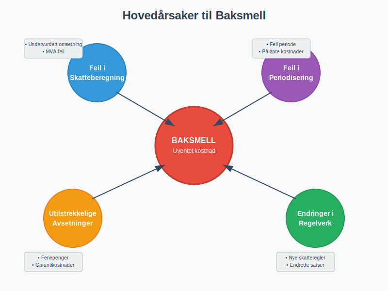
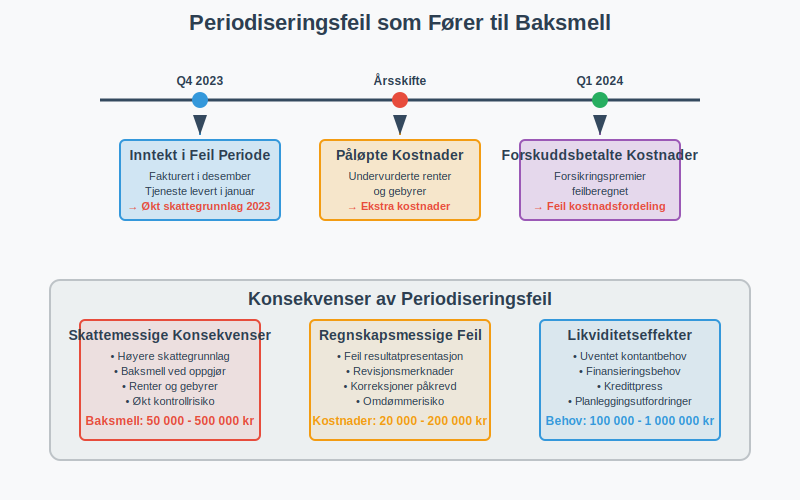
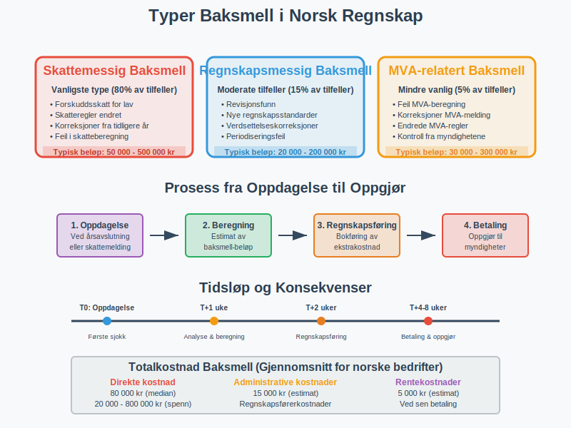
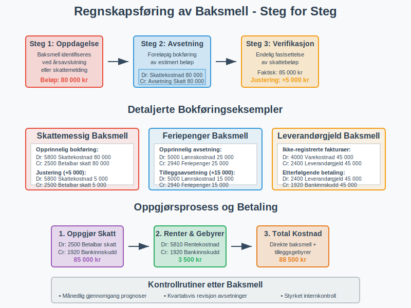
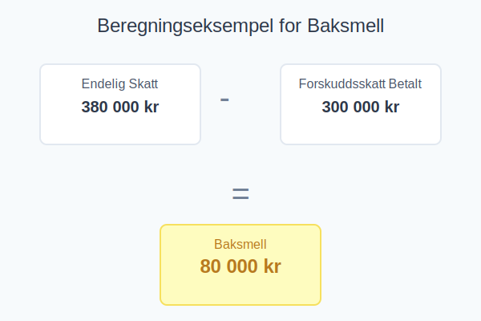
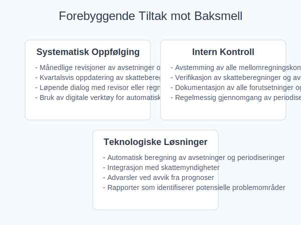
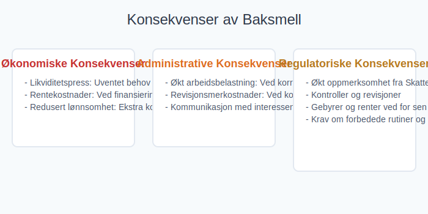
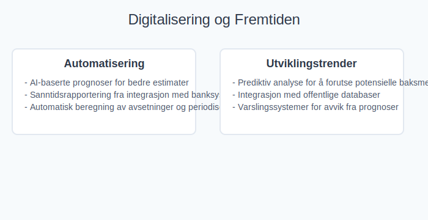
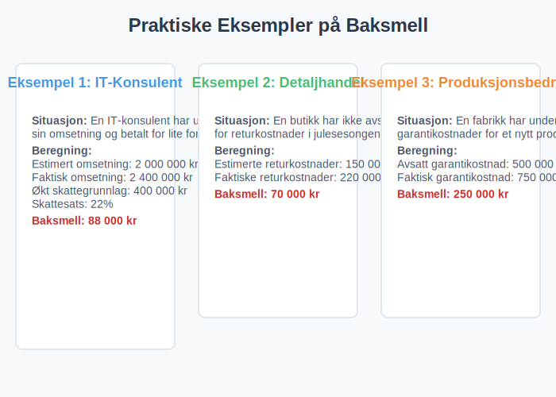

Baksmell er en ekstra skattekostnad eller regnskapsjustering som oppstår når forskuddsbetalinger, avsetninger eller periodiseringer ikke dekker den faktiske skatten eller kostnaden ved likningsoppgjøret. Dette fører til en uventet ekstrakostnad som kan påvirke virksomhetens likviditet og økonomiske planlegging.
Hva er Baksmell?
Baksmell er en norsk regnskapsterminologi som beskriver situasjoner hvor virksomheten får en uventet ekstrakostnad ved skatteoppgjøret eller årsavslutningen. Begrepet brukes når den faktiske skatten eller kostnaden overstiger det som tidligere er beregnet og avsatt.
Definisjonen av Baksmell
Baksmell oppstår når:
- Forskuddsskatt eller forskuddstrekk har vært for lavt beregnet
- Avsetninger for kostnader eller periodisering har vært utilstrekkelige
- Skjulte feil i regnskapsføringen har ført til underrapportering av skattegrunnlag
- Endringer i regelverk som påvirker skatteberegningen etter at avsetninger er gjort

Årsaker til Baksmell
1. Feil i Skatteberegninger
De vanligste årsakene til baksmell relatert til skatteberegninger inkluderer:
- Undervurdering av omsetning ved prognostisering
- Overvurdering av fradragsberettigede kostnader
- Manglende hensyn til skattemessige justeringer
- Feil i beregning av mva
2. Utilstrekkelige Avsetninger
Virksomheter kan få baksmell på grunn av mangelfulle avsetninger for:
| Avsetningstype | Typiske Feil | Konsekvenser |
|---|---|---|
| Feriepenger | Undervurdering av opptjening | Ekstra lønnskostnader |
| Bonuser | Manglende prognostisering | Uventede personalkostnader |
| Leverandørgjeld | Ikke-fakturerte leveranser | Økte driftskostnader |
| Garantikostnader | Undervurdert garantiforpliktelse | Ekstra servicekostnader |
3. Periodiseringsfeil
Periodisering kan føre til baksmell når:
- Inntekter er periodisert til feil periode
- Kostnader ikke er korrekt fordelt over perioder
- Påløpte renter eller gebyrer er undervurdert
- Forsikringspremier eller andre forhåndsbetalte kostnader er feilberegnet

Typer Baksmell
Skattemessig Baksmell
Dette er den vanligste formen for baksmell og oppstår ved:
- Skattemelding viser høyere skatt enn beregnet
- Endringer i skatteregler som ikke er reflektert i avsetninger
- Korreksjoner av tidligere års skattegrunnlag
Regnskapsmessig Baksmell
Oppstår ved årsavslutning når:
- Revisjonen avdekker feil i regnskapet
- Nye regnskapsstandarder krever justeringer
- Verdsettelse av eiendeler må korrigeres
MVA-relatert Baksmell
Kan oppstå ved:
- Feil i mva-beregninger
- Korreksjoner av tidligere MVA-meldinger
- Endringer i MVA-regler

Regnskapsføring av Baksmell
Grunnleggende Bokføring
Ved oppdagelse av baksmell bokføres dette vanligvis som:
Debet: Relevant kostnadskonto (resultatkonto)
Kredit: Avsetning/Gjeld (balansekonto)
Eksempel på skatterelatert baksmell:
Debet: Skattekostnad 100 000 kr
Kredit: Betalbar skatt 100 000 kr
Spesifikke Kontoeringsprinsipper
| Baksmell-type | Debet-konto | Kredit-konto | Kommentar |
|---|---|---|---|
| Skatt | 2500 Betalbar skatt ikke utlignet | Bankkonto | Ved betaling |
| Feriepenger | 2940 Feriepenger | Lønnskostnad | Korrigering |
| Leverandørgjeld | 2400 Leverandørgjeld | Varekostnad | Påløpte kostnader |
Oppgjørspostering
Etter at baksmellen er betalt eller oppgjort:
Debet: Avsetning/Gjeld (balansekonto)
Kredit: Bank/Kasse (balansekonto)

Hvordan Beregne og Estimere Baksmell
Prognostiseringsmodeller
For å forutse potensielle baksmell kan virksomheter bruke:
- Rullende prognoser basert på løpende resultater
- Scenarioanalyser med ulike antagelser
- Historiske data og trendanalyser
- Benchmarking mot sammenlignbare virksomheter
Beregningseksempel
Situasjon: Et firma har betalt 300 000 kr i forskuddsskatt, men den endelige skatten blir 380 000 kr.
Beregning av baksmell:
Endelig skatt: 380 000 kr
Forskuddsskatt betalt: - 300 000 kr
Baksmell: = 80 000 kr
Regnskapsføring:
Debet: Skattekostnad 80 000 kr
Kredit: Betalbar skatt 80 000 kr

Forebyggende Tiltak
Systematisk Oppfølging
Best practices for å unngå baksmell:
- Månedlige revisjoner av avsetninger og prognoser
- Kvartalsvis oppdatering av skatteberegninger
- Løpende dialog med revisor eller regnskapsfører
- Bruk av digitale verktøy for automatisk beregning
Intern Kontroll
Etabler kontrollrutiner for:
- Avstemming av alle mellomregningskontoer
- Verifikasjon av skatteberegninger og avsetninger
- Dokumentasjon av alle forutsetninger og antagelser
- Regelmessig gjennomgang av periodiseringer

Teknologiske Løsninger
Moderne regnskapssystemer kan bidra til å redusere baksmell ved:
- Automatisk beregning av avsetninger
- Integrasjon med skattemyndigheter
- Advarsler ved avvik fra prognoser
- Rapporter som identifiserer potensielle problemområder
Konsekvenser av Baksmell
Økonomiske Konsekvenser
Baksmell kan påvirke virksomheten på flere måter:
- Likviditetspress: Uventet behov for kontanter
- Rentekostnader: Ved finansiering av baksmell
- Redusert lønnsomhet: Ekstra kostnader påvirker resultatet
Administrative Konsekvenser
- Økt arbeidsbelastning ved korreksjoner og oppfølging
- Revisjonsmerkostnader ved komplekse korreksjoner
- Kommunikasjon med interessenter om avvik
Regulatoriske Konsekvenser
Ved betydelige baksmell kan virksomheten risikere:
- Økt oppmerksomhet fra Skatteetaten
- Kontroller og revisjoner
- Gebyrer og renter ved for sen betaling
- Krav om forbedrede rutiner og kontroller

Bransjespesifikke Utfordringer
Bygge- og Anleggsbransjen
Særlige utfordringer med baksmell på grunn av:
- Prosjektbasert virksomhet
- Lange avskrivningsperioder
- Komplekse kostnadsellementer
Detaljhandel
Utfordringer knyttet til:
- Sesongvariasjoner i omsetning
- Varelager-svingninger
- Kompleks MVA-behandling
Tjenesteyting
Spesielle hensyn for:
- Opptjent ikke fakturert inntekt
- Personalkostnader og feriepenger
- Prosjektbaserte inntekter
Digitalisering og Fremtiden
Automatisering
Moderne teknologi bidrar til å redusere baksmell ved:
- AI-baserte prognoser for bedre estimater
- Sanntidsrapportering fra integrasjon med banksystemer
- Automatisk beregning av avsetninger og periodiseringer
Utviklingstrender
Fremtidens regnskapssystemer vil fokusere på:
- Prediktiv analyse for å forutse potensielle baksmell
- Integrasjon med offentlige databaser
- Varslingssystemer for avvik fra prognoser

Praktiske Eksempler
Eksempel 1: IT-Konsulent
Situasjon: En IT-konsulent har undervurdert sin omsetning og betalt for lite forskuddsskatt.
Beregning:
- Estimert omsetning: 2 000 000 kr
- Faktisk omsetning: 2 400 000 kr
- Økt skattegrunnlag: 400 000 kr
- Skattesats: 22%
- Baksmell: 88 000 kr
Eksempel 2: Detaljhandel
Situasjon: En butikk har ikke avsatt nok for returkostnader i julesesongen.
Beregning:
- Estimerte returkostnader: 150 000 kr
- Faktiske returkostnader: 220 000 kr
- Baksmell: 70 000 kr
Eksempel 3: Produksjonsbedrift
Situasjon: En fabrikk har undervurdert garantikostnader for et nytt produkt.
Beregning:
- Avsatt garantikostnad: 500 000 kr
- Faktisk garantikostnad: 750 000 kr
- Baksmell: 250 000 kr

Relaterte Artikler
For å lære mer om emner som henger sammen med baksmell, se også:
- Skattemelding
- Forskuddsskatt
- Periodisering
- Avsetning
- Årsavslutning
- Betalbar skatt
- Mva
- Likviditet
- Fremførbart underskudd
- Restskatt
Oppsummering
Baksmell er en viktig konsept innen norsk regnskap og skatt som kan påvirke virksomheters økonomi betydelig. Ved å forstå årsaker, implementere forebyggende tiltak og ha gode rutiner for regnskapsføring kan virksomheter minimere risikoen for uventede ekstrakostnader.
Nøkkelpunkter for å unngå baksmell:
- Regelmessig oppfølging av prognoser og avsetninger
- Kvalitetssikring av skatteberegninger
- Bruk av moderne teknologi for automatisering
- Tett samarbeid med fagekspertise
- Kontinuerlig forbedring av interne rutiner
Ved å ta hensyn til disse faktorene kan virksomheter sikre mer nøyaktig finansiell rapportering og unngå de negative konsekvensene som baksmell kan medføre.